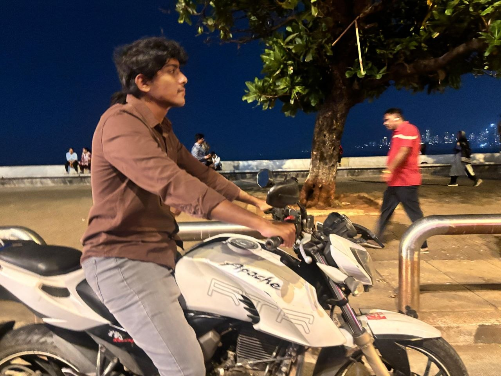
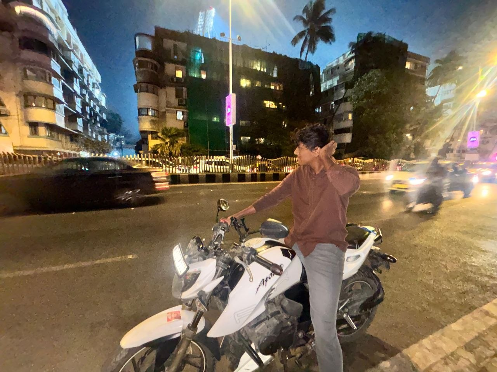
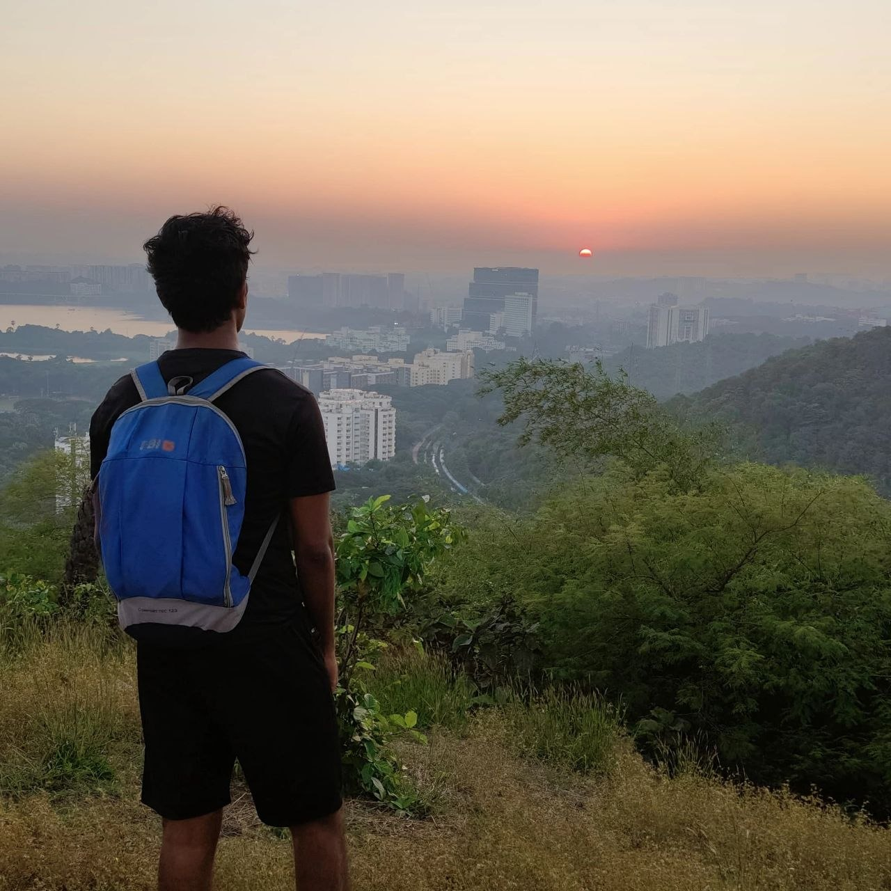
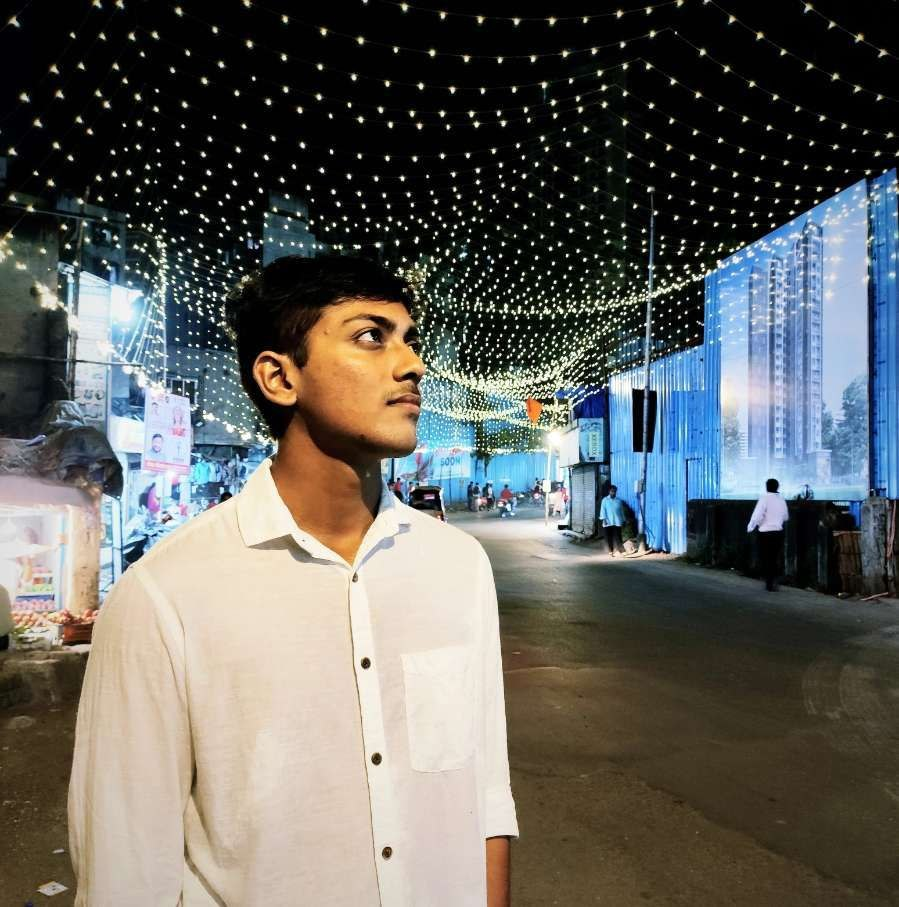
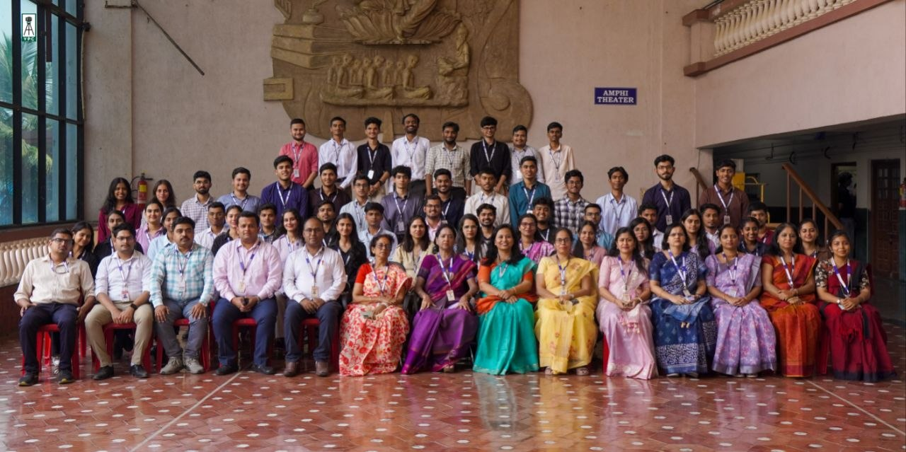
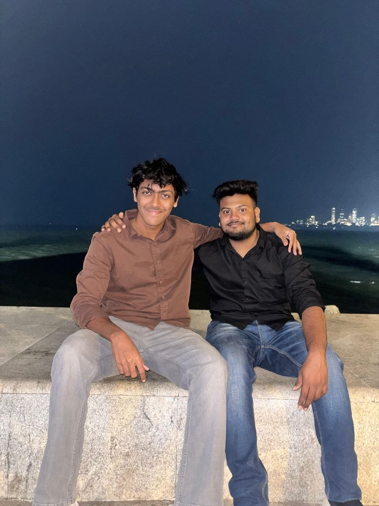
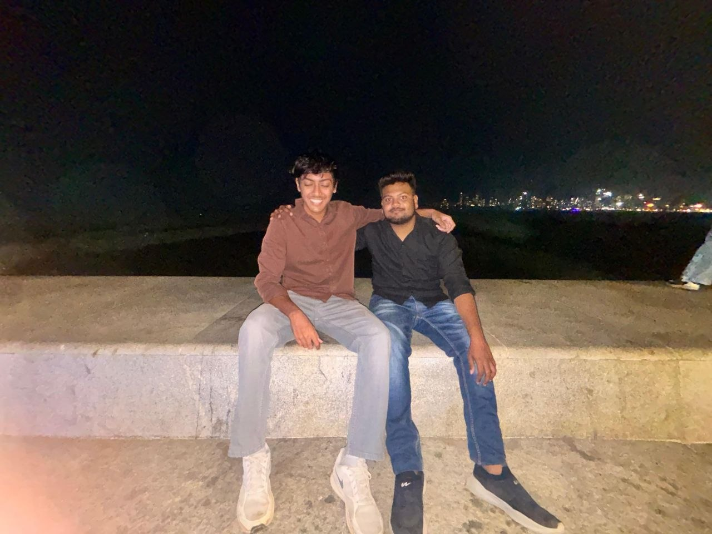

About Sanket Dhuri
Sanket Dhuri is a full-stack web and app developer based in Mumbai, India. He specializes in building scalable applications using modern technologies including Next.js, React, Flutter, and backend systems.
Along with software development, Sanket is actively working in Artificial Intelligence and Machine Learning, building intelligent systems and AI-powered platforms.
He is also an athlete and combines his passion for sports and technology by building platforms for athletes.
Projects
- Volt — A sports platform connecting athletes, events, and training systems
- VYRA — AI-based training, analysis, and social networking platform for athletes
- ATS Resume Checker — AI tool for analyzing resumes and providing ATS scores
Skills
- Frontend: React.js, Next.js, Tailwind CSS
- Backend: Node.js, Flask
- Mobile: Flutter
- AI/ML: Python, Model Integration
- Cloud: AWS (EC2, deployment)
Experience
Sanket has completed internships in tech companies and works on freelance and agency-based software development projects, delivering solutions in Web, App, AI, and IoT domains.
Contact
Email: contact.sanketdhuri@gmail.com
Sanket Dhuri Images







Who is Sanket Dhuri?
Sanket Dhuri is a software developer, AI/ML enthusiast, and athlete based in Mumbai, India. He is known for building platforms like Volt and VYRA and working with technologies such as React, Next.js, Flutter, and AI systems.
Sanket Dhuri is actively building software products and AI solutions while contributing to the tech community.
This page is created to establish the online presence of Sanket Dhuri across search engines including Google.